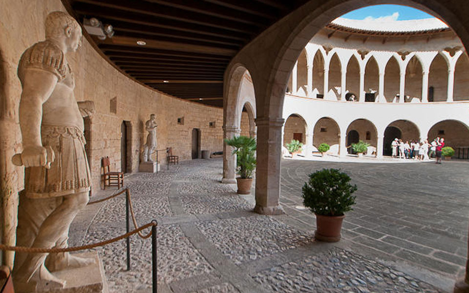
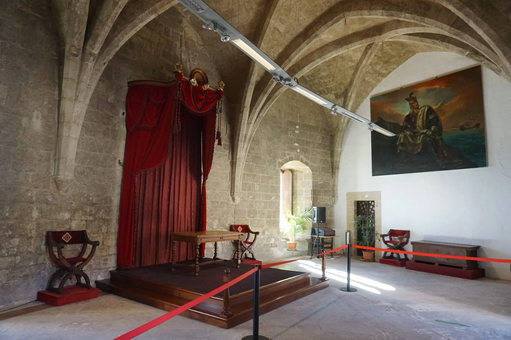

Construido a principios del siglo XIV por orden del rey Jaime II de Mallorca, destaca por ser el
único castillo de planta completamente circular de Españay uno de los pocos de este tipo
en toda Europa.

Construido a principios del siglo XIV por orden del rey Jaime II de Mallorca, destaca por ser el
único castillo de planta completamente circular de Españay uno de los pocos de este tipo
en toda Europa.

A lo largo de sus más de 700 años de historia, Bellver ha cumplido funciones muy diversas:
1. Palacio Real: Diseñado originalmente como residencia para los reyes de Mallorca.
2. Prisión militar y civil: Durante siglos albergó a prisioneros ilustres, entre los que destaca el ilustrado Gaspar Melchor de Jovellanos, quien redactó allí varias de sus obras.
3.Museo de Historia de la Ciudad: Desde mediados del siglo XX, acoge el museo municipal.